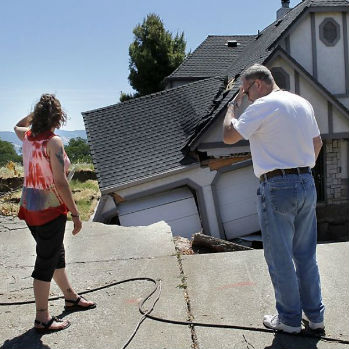
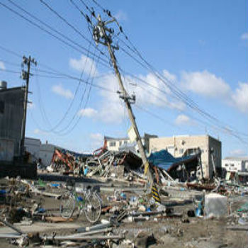
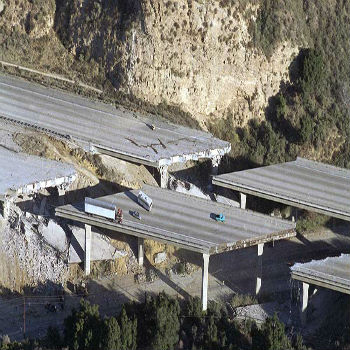

|  |  |  |
Electricity
: The modern home depends heavily on electricity to keep everything running. How to live without it?Water
: Drinking water is a major priority, but other demands are also crucial. Where to find the water you need?Food
: Food supply chains may be broken. What alternatives do you have?Heat and Gas
: Winter earthquakes raise another challenge - how to stay warm?Housing
: What can you do if your home is badly damaged?Phone Service
: Cell networks can break down quickly. But what if they stay out for days or weeks?Internet Access
: How to connect in a disconnected new world?News and Information
: Where to get the latest and most accurate media updates in a disaster situation?Transportation
: What are the best routes to take when major roads and bridges are too dangerous to use?Medical Care
: If hospitals are damaged or destroyed, how can you help injury victims?Schools
: When should parents send children back to school, or create new alternatives?Banking
: Crucial financial information networks may be blocked or broken. How can you access your economic data?Waste Disposal
: How to safely dispose of trash and sewage when city services fail?